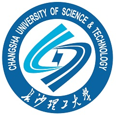

戴愿 (Yuan Dai)
 |
博士研究生 |
关于我
我现在是华南理工大学 土木与交通学院的一名三年级博士生。 在此之前, 我分别于2018年12月、2016年7月在 长沙理工大学 计算机与通信工程学院取得硕士及学士学位。
我的研究兴趣主要包括: 智能交通, 计算机视觉, 目标检测, 轻量化神经网络, 深度学习 等。
教育经历
|
|
博士 华南理工大学 (2019.9 ~ 2023.7)
|
|  | 本科及硕士 长沙理工大学 (2012.9 ~ 2018.12) |
主要学术论文（本人一作及导师一作）
Making YOLO Faster: Towards Real-Time Intelligent Transportation Detection
Yuan Dai, Weiming Liu, Wei Xie, Ruikang Liu, Zhongxing Zheng, Kejun Long, Liang Wang, Liang Mao, Qisheng Qiu, Guangzheng Ling
IEEE Transactions on Instrumentation & Measurement (IEEE-TIM), 2022. Under Review, [JCR Q1]
Larger is Better? Rethinking the Application of Deep Learning for Foreign Object Detection in Metro System
Yuan Dai, Weiming Liu, Ruikang Liu, Zhongxing Zheng, Kejun Long, Liang Wang, Liang Mao, Qisheng Qiu, Guangzheng Ling
Multimedia Tools and Applications (MTAP), 2021. Under Review, [JCR Q2]
Efficient Foreign Object Detection Between PSDs and Metro Doors via Deep Neural Networks
Yuan Dai, Weiming Liu, Haiyu Li, Lan Liu
IEEE Access, 2020. [JCR Q2][PDF]
Aspect based sentiment analysis by a linguistically regularized CNN with gated mechanism
Daojian Zeng, Yuan Dai, Feng Li, Jin Wang, Arun Kumar Sangaiah
JOURNAL OF INTELLIGENT & FUZZY SYSTEMS (JIFS), 2019.
Adversarial learning for distant supervised relation extraction
Daojian Zeng, Yuan Dai, Feng Li, R Simon Sherratt, Jin Wang
Computers, Materials & Continua (CMC), 2018. [JCR Q2][PDF]
奖励与荣誉
2018：研究生国家奖学金
2017：CCL & NLP-NABD 2017 最佳论文(264 篇论文取3)
2017：长沙理工大学优秀研究生
学术服务
IEEE Graduate Student Member, 中国计算机学会学生会员，中国图象图形学学会学生会员，中国公路学会学生会员
审稿人：IEEE T-ITS, IEEE Access, Transportation Research Record等期刊；ACL, AAAI, TRB, ICAIS等会议
HTML Hit Counters